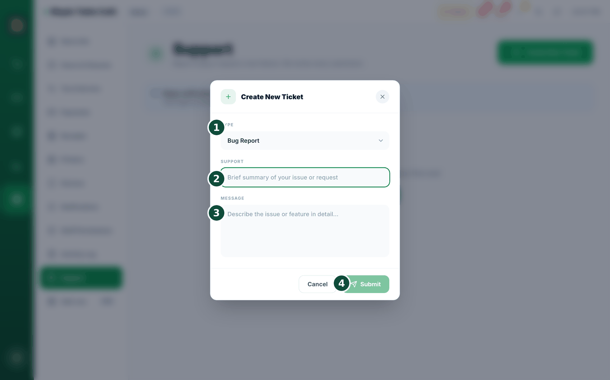
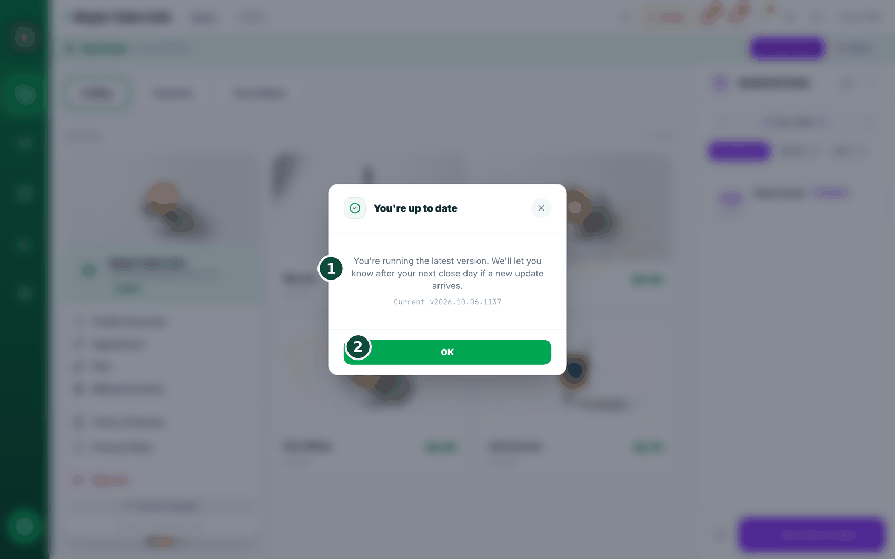

27故障排除与支持
有时难免出问题——没关系。这里列出最常见问题的快速解决办法，以及如何向我们寻求帮助。


- Card 按钮是灰色的，点不了？说明您还没有关联 Stripe 账户。请前往收款进行连接。
- 断网了？别担心——继续销售即可。BrewDesk 离线时也能正常运行。参见离线使用。
- 厨房单没有打印？先检查打印机是否开机，然后查看重试列表。参见小票与打印机。
- 更新后出现空白白屏，或应用看起来卡住了？点击屏幕顶部的 Refresh / Clear cache 按钮并确认。它会清除旧的应用文件并加载新的副本——您已保存的订单和设置是安全的。

- 仍然解决不了？在应用中，前往 Settings › Support › Create New Ticket 创建支持工单（也就是给我们写一条留言）。或者访问 brewdesk.io。
Refresh / Clear cache 是更新后立刻可用的快速修复办法。它会重新加载应用的最新版本，而不会影响您已保存的订单或设置。
支持工单就是您发给我们帮助团队的一条消息。告诉我们哪里出了问题，我们会回复您。
小平板上按钮被截断，或文字太小？打开账户菜单（右上角），找到 Display Scaling（显示缩放）。保持 Auto（自动），BrewDesk 会自动让画面适配您的设备，并显示它选择的百分比。如果您想自己选择大小，请切换到 Manual（手动）。
尚未登录，或在帮助未登录的人？我们在 brewdesk.io/support 提供了一个简洁的帮助页面——无需登录。页面上有我们的邮箱地址、通常的回复时间，以及最常见问题的解答（离线、硬件、刷卡付款、设备数量上限、取消、数据存放位置）。
自动更新
我们一直在改进 BrewDesk，您的收银机会自动获取新版本。它绝不会在销售进行到一半时更新——下面具体说明更新发生的时机以及您会看到什么。
- 更新只会在您每天开机之后开始——而不是在您使用时。刷新页面不算，必须是真正的重新启动。
- 即便如此，BrewDesk 也会先检查是否安全：购物篮必须为空、没有正在进行的付款、设备在线，且没有等待同步的内容。只要其中任何一项不满足，就会等到另一天。
- 在任何操作发生之前，您会收到 3 秒提示：“Starting the update”（即将开始更新）→ “Starting in 3s.”（3 秒后开始。）
- 现在不方便？只需触摸屏幕。提示信息写着 “Tap the screen to do this later”（点击屏幕可稍后再进行）——点一下即可取消，然后继续工作。在您下次开机之前，不会再次询问。
- 如果您任其运行，更新界面会显示您的标志，并用一行简短的文字说明它在做什么：“Checking the new version”（正在检查新版本）→ “Loading the screen”（正在加载界面）→ “Loading your store”（正在加载门店信息）。每台设备每天只会发生一次。
耗时较长时它会告诉您。大约 15 秒后，这行文字会变为 “Taking a little longer. You can leave it as is.”（还需要一点时间，放着就好。）并没有出故障——放着不管，它会自行完成。
赶时间？用已保存的数据开始。如果大约 22 秒后仍在等待，您会看到 “Waiting for your store information”（正在等待您的门店信息）和一个 Start with saved data（使用已保存的数据开始）按钮。点击后，您会使用设备上已有的信息直接进入门店界面，以便为下一位顾客服务。
您无需守在一旁看着。屏幕底部始终写着 “When the update finishes, it'll return to your store screen on its own.”（更新完成后会自动回到门店界面。）而且，如果更新无法完成，BrewDesk 会选择放弃而不是把您困住：“We skipped the update this time. Everything works just as before.”（这次先跳过了更新，可以继续使用原来的界面。）
主动更新——以及为什么有时需要等待
您也可以自己要求更新，而不必等到第二天早上。会打开一个显示新内容的列表，下方有一个更新按钮。

- 点击更新按钮。如果收银机正忙，不会丢失任何数据——BrewDesk 会暂缓更新，并用一句话告诉您原因。
- “An order is still open. We'll apply it once it's done.”（订单尚未结束，完成后将自动应用。）——请完成订单或挂起购物篮。
- “A payment is in progress. We'll apply it when it's done.”（正在处理付款，完成后将自动应用。）——绝不会在付款过程中更新。
- “Please check your internet connection.”（请检查网络连接。）或 “Some orders haven't been sent yet. We'll apply it once they're synced.”（还有订单未同步，同步完成后将自动应用。）——它会等到您的订单安全上传之后再更新。
- 一切就绪后，它会显示 “Getting the new version”（正在获取新版本），然后自动重新加载您的门店界面。
耗时较长？大约 20 秒后，您会看到 “Taking a little longer. You can leave it as is.”（还需要一点时间，放着就好。）如果确实无法获取：“We couldn't get the new version right now. Please try again in a moment.”（暂时无法获取新版本，请稍后再试。）没有出故障，也没有丢失任何数据——继续营业，稍后再试即可。
更新后，它会告诉您。下次收银机启动时，您会看到一条简短的提示——“This version includes improvements and fixes.”（此版本包含性能改进和错误修复。）——这样，屏幕看起来略有不同时，您就不会感到疑惑。